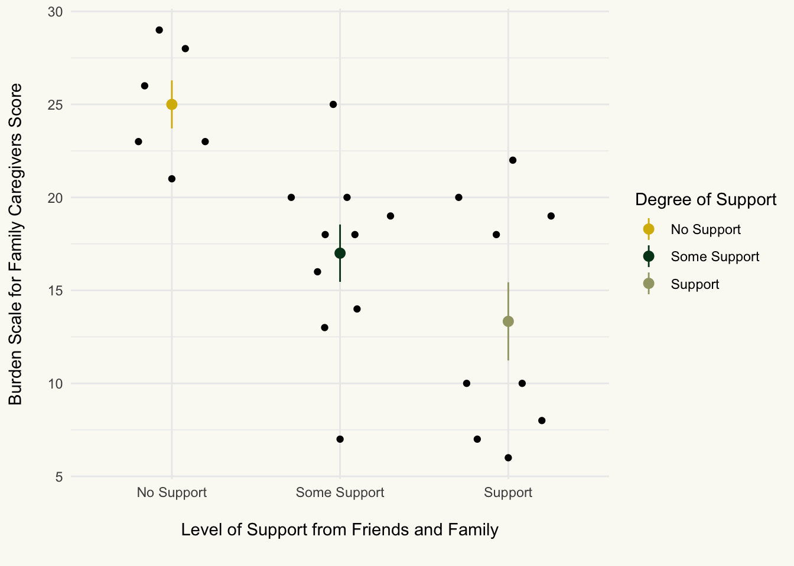
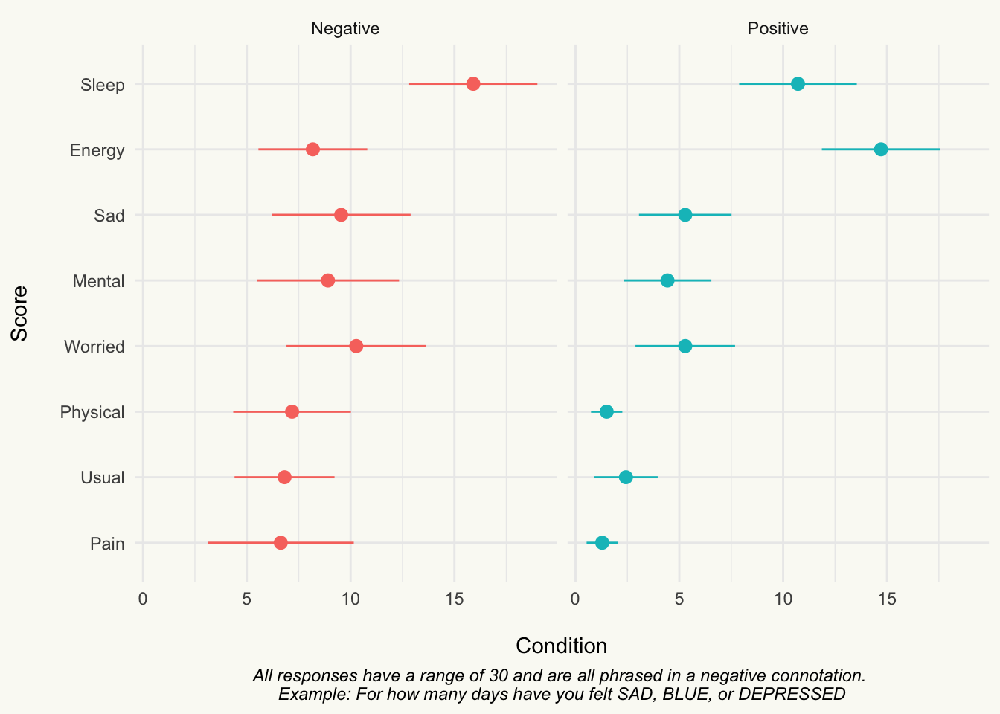

Burden of Care Analysis Report
Code
# Hux Wrapper: Correlation
hux_corr <- function(ct){
if(!class(ct) == "htest"){
print("Source must be of class 'htest'")
} else{
ct |>
broom::tidy() |>
mutate(
`CI[LL,UU]` = paste0("[",conf.low |> round(2),
",",conf.high |> round(2),
"]")
) |>
rename(
r = estimate,
t = statistic,
p = p.value,
df = parameter,
) |>
relocate(
p, .after = df
) |>
relocate(
alternative, .after = last_col()
) |>
select(-conf.low,-conf.high,-method) |>
hux() |>
theme_article()
}
}
# t-test Wrapper
hux_tt <- function(ttest,grp1,grp2){
if (!class(ttest)=="htest"){
print("Object is not a t-test")
} else {
ttest |>
broom::tidy() |>
rename(
M_Diff = estimate,
t = statistic,
p = p.value,
df = parameter,
grp1 = estimate1,
grp2 = estimate2
) |>
mutate(
`CI[ll,uu]` = paste0("[",round(conf.low,2),",",round(conf.high,2),"]")
) |>
select(!conf.low:alternative) |>
relocate(p, .after = `CI[ll,uu]`) |>
hux() |>
theme_article()
}
}
# Continous Scales
cont_skim <- function(data){
sk <-
data |>
# Data is Rowwise from cleaning
ungroup() |>
skim() |>
# Remove skim_type
yank("numeric") |>
# Make everything Look Like This
rename_with(str_to_sentence) |>
rename(
M = Mean,
SD = Sd,
Missing = N_missing,
Variable = Skim_variable
) |>
# Remove Quartile Columns
dplyr::select(!(starts_with("P"))) |>
hux() |>
theme_article() |>
set_align(everywhere,everywhere,"center") |>
set_align(row = everywhere, col = 1, value = "left")
return(sk)
}
# Discrete Scales
discrete_tab <- function(data,x,lab){
name <-
data |>
dplyr::select({{x}}) |>
pull()
tab <-
name |>
tabyl() |>
dplyr::select(-(starts_with("val"))) |>
# Ignore Error for Now,,,
adorn_pct_formatting(,,,percent) |>
rename_with(str_to_sentence) |>
hux() |>
theme_article() |>
set_align(everywhere,everywhere,".")
# Change header row to Variable | |
tab[1,] <- c(str_to_sentence(x),"","")
# Get Number of Rows
to_in <- nrow(tab)
tab[2:to_in,1] <- lab
return(tab)
}
# Set Theme Structure
theme_set(theme_minimal())
theme_update(
plot.background = element_rect(fill = "#fafaf5", color = "#fafaf5"),
panel.background = element_rect(fill = NA, color = NA),
panel.border = element_rect(fill = NA, color = NA),
)Study Design
-
IV’s
Negative Prime Scramble
Positive Prime Scramble
-
DV’s
Burden Scale for Family Caregivers
Positive Aspects of Caregiving
Dementia Attitude’s Scale
Healthy Days Score
Years as a Caregiver
Confidence in Ability to Provide Care
Support Received from Friends/Family
Hypotheses
Confidence
H1: There will be a negative correlation between confidence and BSFC Score
H2: There will be a positive correlation between confidence and PAOC Score
Priming: Negative vs. Positive
H3: There will be a main effect of priming on BSFC Score
H4: There will be a main effect of priming on PAOC Score
Support
H5: There will be a negative correlation between support and BSFC Score
H6: There will be a positive correlation between support and PAOC Score
Data Cleaning
Code
# Read in file
cg <- read.csv(file.choose())
# Clean Data
cg_cln <-
cg |>
# Rename variables
rename(
condition = Condition...Positive...1..Negative...2,
years_as_cg = X..years.as.caregiver,
support = Support..Do.you.feel.like.you.have.adequate.support.from.others.in.your.life..0...no..1...somewhat..2...yes,
confidence = confidence.1.not.confident.5.very.confident,
hd_gen = hd_genWould.you.say.that.in.general.your.health.is...,
hd_phys = hd_physHow.many.days.during.the.past.30.days.was.your.physical.health.not.good.,
hd_men = hd_menHow.many.days.during.the.past.30.days.was.your.mental.health.not.good.,
hd_usual = hd_usualDuring.the.past.30.days..for.about.how.many.days.did.poor.physical.or.mental.health.keep.you.from.doing.your.usual.activities..such.as.self.care..work..or.recreation.,
hd_pain = hd_painDuring.the.past.30.days..for.about.how.many.days.did.PAIN.make.it.hard.for.you.to.do.your.usual.activities..such.as.selfcare..work..or.recreation.,
hd_sad = hd_sadDuring.the.past.30.days..for.about.how.many.days.have.you.felt.SAD..BLUE..or.DEPRESSED.,
hd_worried = hd_worriedDuring.the.past.30.days..for.about.how.many.days.have.you.felt.WORRIED..TENSE..or.ANXIOUS.,
hd_sleep = hd_sleepDuring.the.past.30.days..for.about.how.many.days.have.you.felt.you.did.NOT.get.ENOUGH.REST.or.SLEEP.,
hd_energy = hd_energyDuring.the.past.30.days..for.about.how.many.days.have.you.felt.VERY.HEALTHY.AND.FULL.OF.ENERGY.
) |>
# Clean Names
clean_names()Correlations: Years as Caregiver
Years as Caregiver x Positive Aspects of Caregiving
Code
cor.test(cg_cln$years_as_cg,cg_cln$paoc) |>
hux_corr()| r | t | df | p | CI[LL,UU] | alternative |
|---|---|---|---|---|---|
| 0.311 | 1.57 | 23 | 0.13 | [-0.1,0.63] | two.sided |
Years as Caregiver x Burden Scale for Family Caregivers
Code
# Years x BSFC
cor.test(cg_cln$years_as_cg, cg_cln$bsfc) |>
hux_corr()| r | t | df | p | CI[LL,UU] | alternative |
|---|---|---|---|---|---|
| 0.0702 | 0.338 | 23 | 0.739 | [-0.33,0.45] | two.sided |
Correlations: Confidence in Health Condition
H1. Level of Confidence x Positive Aspects of Caregiving
Code
# Confidence x PAOC
cor.test(cg_cln$confidence, cg_cln$paoc) |>
hux_corr() | r | t | df | p | CI[LL,UU] | alternative |
|---|---|---|---|---|---|
| 0.441 | 2.36 | 23 | 0.0272 | [0.06,0.71] | two.sided |
Code
cg_cln |>
ggplot(aes(confidence, paoc)) +
geom_point() +
xlim(1,5) +
ylim(0,50) +
geom_smooth(method = "lm", se = FALSE) +
labs(x = "\nConfidence",
y = "Positive Aspects of Caregiving\n",
caption = "Figure 3. Confidence predicts score on PAOC") +
theme(
panel.grid = element_blank(),
axis.text = element_text(color = "black"),
plot.caption = element_text(face = "italic",
hjust = .5)
)`geom_smooth()` using formula = 'y ~ x'
H2. Level of Confidence x Burden Scale for Family Caregivers
Code
# Confidence x BSFC
cor.test(cg_cln$confidence, cg_cln$bsfc) |>
hux_corr()| r | t | df | p | CI[LL,UU] | alternative |
|---|---|---|---|---|---|
| -0.0508 | -0.244 | 23 | 0.81 | [-0.44,0.35] | two.sided |
Code
cg_cln |>
ggplot(aes(confidence, bsfc)) +
geom_point() +
xlim(1,5) +
ylim(0,40) +
geom_smooth(method = "lm", se = FALSE) +
labs(x = "\nConfidence",
y = "Positive Aspects of Caregiving\n") +
theme(
panel.grid = element_blank(),
axis.text = element_text(color = "black")
)`geom_smooth()` using formula = 'y ~ x'
Correlations: Support
Code
# Make Support a 3 Level Factor
support <-
cg_cln |>
mutate(
support = case_when(
support == "0" ~ "No Support",
support == "1" ~ "Some Support",
support == "2" ~ "Support"
)
) |>
select(support,bsfc,paoc)H5: Support and PAOC
Code
Warning in huxreg(summary(lm(support$paoc ~ support$support))): Unrecognized statistics: logLik, AIC
Try setting `statistics` explicitly in the call to `huxreg()`| (1) | |
|---|---|
| (Intercept) | 24.667 *** |
| (2.697) | |
| support$supportSome Support | 8.033 * |
| (3.412) | |
| support$supportSupport | 14.222 *** |
| (3.482) | |
| N | 25 |
| R2 | 0.432 |
| *** p < 0.001; ** p < 0.01; * p < 0.05. | |
H6: Support and BSFC
Code
Warning in huxreg(summary(lm(support$bsfc ~ support$support))): Unrecognized statistics: logLik, AIC
Try setting `statistics` explicitly in the call to `huxreg()`| (1) | |
|---|---|
| (Intercept) | 25.000 *** |
| (2.100) | |
| support$supportSome Support | -8.000 ** |
| (2.656) | |
| support$supportSupport | -11.667 *** |
| (2.711) | |
| N | 25 |
| R2 | 0.460 |
| *** p < 0.001; ** p < 0.01; * p < 0.05. | |
Figures
Code
# Plot: Support and BSFC
support |>
ggplot(aes(support,bsfc)) +
stat_summary(
fun.data = "mean_se",
aes(color = support)
) +
geom_quasirandom() +
labs(
x = "\nLevel of Support from Friends and Family\n",
y = "Burden Scale for Family Caregivers Score\n",
color = "Degree of Support"
) +
scale_color_manual(
values = wes_palette(15)
)
Code
# Plot: Support and PAOC
support |>
ggplot(aes(support,paoc)) +
stat_summary(
fun.data = "mean_se",
aes(color = support)
) +
geom_quasirandom() +
labs(
x = "\nLevel of Support from Friends and Family\n",
y = "Positive Aspects of Caregiving Score\n",
color = "Degree of Support"
) +
scale_color_manual(
values = wes_palette(15)
)Priming Negative vs Positive
H3: Priming and BSFC
Code
pr_bsfc <-
t.test(cg_cln$bsfc ~ cg_cln$condition, var.equal = T) |>
hux_tt()
pr_bsfc$grp1[1] <- "Negative"
pr_bsfc$grp2[1] <- "Positive"
pr_bsfc| M_Diff | Negative | Positive | t | df | CI[ll,uu] | p |
|---|---|---|---|---|---|---|
| -6.56 | 14.7 | 21.3 | -2.74 | 23 | [-11.51,-1.6] | 0.0117 |
H4: Priming and PAOC
Code
pr_paoc <-
t.test(cg_cln$paoc ~ cg_cln$condition, var.equal = T) |>
hux_tt()
pr_paoc$grp1[1] <- "Negative"
pr_paoc$grp2[1] <- "Positive"
pr_paoc| M_Diff | Negative | Positive | t | df | CI[ll,uu] | p |
|---|---|---|---|---|---|---|
| 4.06 | 34.8 | 30.7 | 1.21 | 23 | [-2.87,10.99] | 0.238 |
Healthy Days
Code
cg_cln |>
select(condition,starts_with("hd")) |>
group_by(condition) |>
mutate(condition = ifelse(condition == "1", "Positive","Negative")) |>
summarise_all(sum) |>
tidyr::pivot_longer(cols=starts_with("hd"),
names_to = "HealthyDays",
values_to = "Score") |>
ggplot(aes(fct_reorder(HealthyDays,Score),Score,fill=condition)) +
geom_bar(stat = "identity")+
coord_flip() +
facet_wrap(~condition)